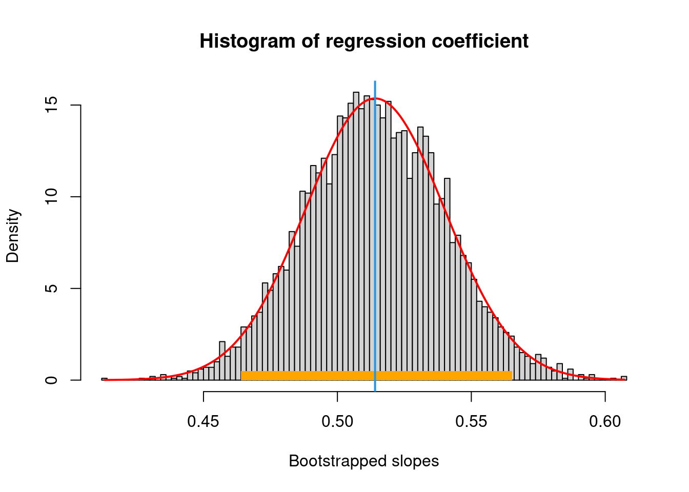

(1 - pnorm(3.33))[1] 0.0004342299In the previous unit we discussed at several stages examples that involved the natural probabilities that a newborn baby would be a girl or a boy and reported the established evidence that this probability was found to be 0.487 for girls and 0.513 for boys, which corresponds to a ratio of 105 boys for 100 girls.
The first person who seems to have established this fact was Doctor John Arbutnoth, a doctor who became physician to the English Queen Anne in 1705 (see Spiegelhalter (2019)). From parish records reaching from 1609 to 1710, he looked at the numbers of boys born per 100 girls, a number that is today also known as the sex-ratio. His data said that there had been more males than females baptized in every year with an overall sex ratio varying between 107 and 116.
But he wanted to establish something more general about this result. He wanted in fact establish something like a general law or claim. In his attempt to say, something about a general fact revealed in this pattern, he used an argument which would be recognizable to modern statisticians as a so called hypothesis test.
His idea was to imagine first what would be the implication for the sex-ratio if the determination of a baby’s sex would work like a fair coin, a randomizing device that had an equal chance of coming up Heads as of coming up Tails. This thought experiment is what is called in the statistical jargon a null hypothesis: The starting point of your reasoning. In the case of the coin, if you flip a coin 10 times and the coin is fair then you would expect five heads to show up. But there is chance variation and so in ten flips the number of heads will be some times larger and some times lower.
If the mechanism of assignment of a baby’s sex was like a fair coin flip the probability to observe an excess of boys in every year from 1629 to 1705 would be \(\left(\frac{1}{2}\right)^{82}\), which is 0.0000000000000000000000002067952. This is what in statistical testing is called a \(p\)-value. You start with the hypothesis of a 50/50 chance of heads and compute the probability of 82 heads in a row. Statisticians regard a \(p\)-value of about 1/1000 or 0.001 so extreme that is too unlikely that the extreme observation is due to chance. Soemthing else mut be going on.
An excess of boys for 82 years was so unlikely that it is implausible to regard it as chance variation. Statisticians also today use \(p\)-values in this way. If there is an outcome with a really low \(p\)-value then either we have seen a very unlikely event or else the hypothesis we used to compute the \(p\)-value must be wrong. The logic is analogous to an argument by contradiction, designed to show that the hypothesis leads to an absurd conclusion and thus the hypothesis can not be true.
Answering questions and establishing results in statistics is mostly done through the procedure of statistical testing, thus the title of this unit in which you will learn its basic tools.
In this unit you will learn about the idea of a statistical test of significance. Test of significance are a powerful tool combining statistics and probability to decide systematically whether observed differences in some statistics of interest are different for real or just by chance.
To understand the idea of a statistical test it is useful to imagine the tossing of a coin. How can you decide whether there is something suspicious about the coin from observing 10 flips?
We expect that when coin is “fair” coming up Heads and Tails should be equally likely. This expectation is built on an idealized probability model of a perfect random device. This model is the starting point of the reasoning.
In 10 flips you expect 5 Heads but you know that you might get more or less in any particular run just by chance. Assume now, you got 10 heads in a row. Is that extreme enough to be suspicious? How extreme the outcome needs to be before you should doubt the hypothesis that the chances for heads are 50/50?
To answer the question a test of significance computes a \(p\)-value. The probability of at least 6 heads in 1o flips is about 0.38: 38% of the time when you flip a fair coin you will get at least six heads.
For 10 heads out of 10 flips, the \(p\)-value is about 0.001 or 1 in thousand. The result is so extreme that you would almost never get it from a fair coin. Maybe there is more about this coin than just chance variation.
This is the idea we will learn in this unit: If statisticians see a result with a really low \(p\)-value then either they believe they have seen something extremely rare of else the null hypothesis we used to compute the \(p\)-value must be wrong.
Test of significance are among the most important tools of statistics because they help answering specific questions. These questions might have been raised by exploring and visualizing data, studying their shape or by making predictions using models as we have learned in previous units. With the tools of formal testing we can now make new discoveries and establish claims.
Null hypothesis: The null hypothesis corresponds to the idea that an observed difference is due to chance. To make a test of significance, the null hypothesis has to be set up as a probability model - or as we have called it in the previous units a box-model - for the data. The alternative hypothesis is another statement about the box, corresponding to the ideas that the difference is real.
Test-statistic: A test statistic is used to measure the difference between the data and what is expected under the null hypothesis.
z says how many standard errors away an observed value is from its expected value where the expected value is calculated using the null hypothesis.
observed significance level: The observed significance level is the chance of getting a test statistic as extreme as, or more extreme than the observed one. The chance is computed on the basis that the null hypothesis is right. The smaller this chance is, the stronger the evidence against the null.
\(p\)-value: The P-value of a test is the chance of getting a bix test statistic - assuming the null hypothesis to be right. P is not the chance that the null hypothesis being right,
Is an observation about a measurement a result of chance or is there something else going on ? A test of significance is the tool that statisticians have invented to deal with these kinds of questions. Test of significance are another major area of statistics where probability and statistics work together, to understand the world in a new way through data.
Let us consider a fictitious story at the beginning: The manager of a huge online store for electronic products runs a huge advertising campaign promising that the average delivery time for its products is 2 days. The online shop is very large with a huge number of deliveries per day. One day complaints start accumulating at various consumer protection agencies that the promised delivery times are in fact much longer and the advertising campaign is based on false claims.
The manager, when confronted with these claims, argues that there is of course variation in delivery times and that it can happen in rare cases that deliveries take up to double time but if it occurs, it will always be investigated why it took much longer and quality improvement measures are taken.
Since the arguments can not be settled in this way the consumer protection agency decides to look at some data by taking a random sample of 500 delivery records and find an average delivery time of 2.3 days. The standard deviation of the sample turns out to be 2 days.
The manager says, you see, the difference is only 0.3 days and small relative to the standard deviation. The late deliveries reported at your agency must occur just by chance not systematically.
The consumer protection agency does not buy this argument. They point out to the manager that that the relevant number to look at is the standard error, because it will tell how far the average of the sample is likely to be from its expected value, which is the average of the actual delivery times.
The manager, who has taken a statistics course with JWL some years ago, after a refresher of unit 7 of his course, finally agrees to this argument and they estimate the standard deviation of the average delivery time by the standard deviation of the data, which is 2.
The standard error of the sum of the randomly sampled shop records is about, \(\sqrt{500} \times 2\) using the square root law and since we are taking about the average and not the sum, we need to divide by 500, which gives us approximately 0.09.
Now the consumer protection agency suggests to make the following thought experiment:
The average of the randomly chosen delivery times from you records is 2.3 days. You say it ought to be 2. If you were right, the average is about \[\begin{equation} \frac{2.3 - 2}{0.09} \approx 3.33 \end{equation}\]
This says that your average delivery times are more than 3 standard errors above the expected value. This difference is so large that it is very unlikely that it is due to chance. The average delivery time is in reality not 2 days but more than that. The customer complaints are justified and you need to improve your processes or stop the advertising based on duious claims.
“I thought the standard error is about the difference between the sample average and the expected value?”, asks the shop manager.
That’s true says the consumer protection agency but the expected value of the sample average is the average of the delivery times in your own records.
This could be developed as a small dialog or comic between the shop manager and the investigator for the consumer protection agency, if not too tedious. Might be fun.
This is a situation we will encounter now over and over again in this unit. The issue is whether a difference is real or by chance. The calculation to settle this different possibilities is called a test of significance. The key idea is that the observed value is too many standard deviations away from the expected value, that is hard to explain by chance.
Now let us unpack these ideas a bit more generally and introduce you to the technical jargon statistics uses for these ideas.
In the example discussed before there was a random sample of 500 records from an online shop and the records reported an average delivery time for the products of 2.3 days. This is an “observed” value in the language of statistics.
Now 2.3 is clearly more than 2. There is no doubt about that. The value of 2.3 is observed but the question is whether the difference to the claimed average of 2 across the entire records of the webshop is real or just by chance from the sampling process.
In the terminology of statistics, we have two hypothesis both about the webshop records, not the sample.
The question now is the following. When we agree on the sampled data, can we settle the argument about the records? Here is once again the idea of how a statistical test suggests to proceed.
We use the standard deviation of the sample data as an estimate about the standard deviation of the records, and assume in the example that it is 2. Then the standard error of the sum of the 500 draws is \(\sqrt{500} \times 2 \approx 44.72\). Since we argue about the average and not the sum, we need as standard error \(44.72/500 \approx 0.09\).
Now comes a crucial idea, the Null Hypothesis makes an assumption. Assume the claim that the average is 2 is the true average of the records. We have observed an average of 2.3 then given our estimate of the standard error of 0.09, your observed value is \[ \frac{(2.3-2)}{0.09} \approx 3.33 \] more than three standard deviations above from the claimed average. This is just very unlikely and thus too implausible to be due to chance. Thus the hypothesis must be wrong and the average is actually larger than 2.
In the terminology of unit 7 we have set up the testing problem in terms of a box model. The entire records of the webshop are the box and the sample are randomly drawn tickets from the box showing the actual delivery times for each sampled product. When we have a large enough sample, we may then - due to the central limit theorem - assume that the test statistics - in this case average delivery time - follows a normal distribution and this anchor helps us to work out the probabilities of observing the actual average given the assumption of the null hypothesis and the distribution.1
1 In many textbooks on statistics you will find the advise that in situations of our example, you need to take a so called t-test and not a a z-test, because for the z-test the standard deviation of the box should be known. Practicall, however, it is rare that the standard deviation of the population (or “the box”) is known. For sample sizes larger than 30 the difference does practically not matter and you can as well work with the z-test like we did in the example. We will discuss the t-test later in the unit.
The null hypothesis corresponds to the idea that an observed difference is due to chance. To make a test of significance, the null hypothesis has to be set up as a box model for the data. The alternative hypothesis is another statement about the box, corresponding to the the idea that the difference is real.
Every test of significance needs a test-statistics. The idea of a test statistics uses the assumption that the Null-Hypothesis is right and on this basis calculates how many standard errors away the observed value is from its expected value. This was the ratio \[\begin{equation*} \frac{(2.3-2)}{0.09}\approx 3.33 \end{equation*}\] in our example.
A test statistics is used to measure the difference between the data and what is expected on the null hypothesis.
The test statistics we used in the example is called z and is defined as \[ z = \frac{\text{observed} - \text{expected}}{SE} \]
z says how many SEs away an observed value is from its expected value, where the expected value is calculated using the null hypothesis.
Note that the benchmark in the numerator of the z-statistics - in our example 2, the expected value - is determined by the Null-hypothesis. Different hypotheses lead to different benchmarks.
The standard deviation of the box, however, can not be be determined from the Null hypothesis, it has to be estimated from the data, in order to compute a standard error in the denominator of z.
Why would the shop manager have to give in to the complaints when a test statistics shows a value of 3.33?
The answer is that if the test statistics is normally distributed - which we can assume here by the central limit theorem about the distribution of sums and averages - the probability measured by the normal curve of the area above 3.33 is ridiculously small. You can check it with R in a single line:
(1 - pnorm(3.33))[1] 0.0004342299which corresponds to a chance that an average delivery time would be observed, which is 3.33 standard higher then the average: about 4 cases in 10000.
This chance is called an observed significance level. The observed significance level is referred to in the statistical jargon as \(p\)-value.
Why look at the area to the right of 3.33? The data could have turned out differently and then \(z\) would have been different too. For example, when the sample average were 2.5 and the standard deviation were 2.3, then we have \[\begin{equation*} \frac{2.5 - 2}{0.11} \approx 5 \end{equation*}\] This would be stronger evidence against the null hypothesis. On the other hand the sample average could have been 2.1 and the standard deviation 1.8. In this case we would get: \[\begin{equation*} \frac{2.1 - 2}{0.08} \approx 2.5 \end{equation*}\] This would be weaker evidence, because the area right of 2.5 is larger.
# Generate x values for the normal curve
x <- seq(-5, 5, length = 1000)
# Calculate the corresponding standard normal probabilities
y <- dnorm(x)
# Create the plot of the standard normal curve
plot(x, y, type = "l", lwd = 2, ylim = c(0, 0.4), xlab = "Standard Units", ylab = "Density")
# Shade the area to the right of 3.33
#polygon(c(3.33, x[x > 3.33], max(x)), c(0, y[x > 3.33], 0), col = "blue")
polygon(c(x[x>=2.5], max(x), 2.5), c(y[x>=2.5], 0, 0), col= 4)
# Add a vertical line at 2.5
abline(v = 2.5, col = "red", lty = 2)
# Add the letter "z" below the x-axis
text(2.7, 0.06, "z", pos = 1, col = "black", font = 2)
# Add a legend
#legend("topright", legend = c("Area > 3.33"), fill = "blue", alpha = 0.3)
# Title
title(main = "Standard Normal Distribution")The observed significance level is the chance of getting a test statistic as extreme as, or more extreme than the observed one. The chance is computed on the basis that the null hypothesis is right. The smaller this chance is, the stronger the evidence againts the null.
As the test statistics \(z\) depends on the data, so does the \(p\)-value. This is why the \(p\)-value is called an observed significance level. The concept is sometimes confusing because the \(p\)-value is computed using the Null hypothesis.
The null hypothesis is a statement about the population, or in the jargon of unit 7, the “box”. The null hypothesis is either always right or always wrong, because the population does not change. What the observed significance level gives is the chance of getting evidence against the Null Hypothesis as strong as the evidence at hand - or stronger, provided the null is true.
The \(p\)-value of a test is the chance of getting a big test statistic - assuming the null hypothesis to be right. \(p\)- is not the chance of the null hypothesis being right.
Note that the z-test requires a reasonably large sample, when the normal approximation can be used. With small samples other techniques are required.
At the end of this course you will not be surprised that what we can say for the the sum or the mean can easily transferred to the case of proportions because a sum can be interpreted as the sum of a box with tickets 0 and 1 only or a box with TRUEand FALSEvalues. Likewise the mean of a box with 0 and 1 values can be interpreted as a proportion. This section will give an example, involving a sum.
George Cobb and Stephen Gehlbach report in a very interesting case book of applied statistics (Cobb and Gehlbach (2006)) about a court case where statistics was used as evidence.
The case is about an experienced nurse from the Veteran’s Administration hospital in Northampton, Massachusetts. In the 80ier and 90ies this nurse had developed a special reputation among her superiors and colleagues for skill and competence, especially in dealing with emergency situations where patients went into cardiac arrest. She knew how to handle such situations calmly, calling in the resuscitation team and setting shots of a stimulant to try restart a patient’s heart. Often the shot worked and the patient’s heart began to beat again. Many lives were saved in this way. Some patients, however, tragically died.
After a while though suspicion mounted that things were not right. It seemed that there were too many crisis when the experienced nurse was on ward and also the number of patients who died in a cardiac arrest rose sharply. An investigation was launched but nothing was found. The pattern of deaths seemed to be consistent with other patterns in other hospitals. But the suspicion remained.
After an additional investigation, including a statistical analysis by Stephen Gehlbach from the School of Public Health and Health Sciences at the university of Massachusetts, the nurse was indicted for multiple murders by giving patients lethal doses of heart stimulant.
The evidence that was heard by the grand jury in 1998 dealt with her motivation, with the testimony of coworkers as well as the testimony of a physician about the symptoms of the patients that had died. The evidence was indicative but no one actually had seen the nurse give a fatal injection and while some patient’s deaths were unexpected, the symptoms could have been considered consistent with other causes of death.
Was it true that there were more death when the nurse was working? The prosecutor realized that the question of excess deaths required statistics for an answer and this was how Stephen Gehlbach came into the case.
The data consisted of a record of deaths by year and shift as well as information about whether the nurse was on the shift or not. The data could be summarized in a table:
library(gt)
countdf <- data.frame( nurse_present = c("Yes", "No", "Yes", "No"),
death_on_shift = c("Yes","Yes", "No", "No"),
Freq = c(40, 34, 217, 1350))
# Convert from data frame of counts to data frame of cases.
# `countcol` is the name of the column containing the counts
countsToCases <- function(x, countcol = "Freq") {
# Get the row indices to pull from x
idx <- rep.int(seq_len(nrow(x)), x[[countcol]])
# Drop count column
x[[countcol]] <- NULL
# Get the rows from x
x[idx, ]
}
cases <- countsToCases(countdf)
library(gtsummary)
tbl_cross(cases, row=nurse_present, col=death_on_shift)| death_on_shift | Total | ||
|---|---|---|---|
| No | Yes | ||
| nurse_present | |||
| No | 1,350 | 34 | 1,384 |
| Yes | 217 | 40 | 257 |
| Total | 1,567 | 74 | 1,641 |
This table forms the basis for the statistical test. The table summarizes the records for all 18 months leading up to the end of February 1996. There are 547 days in this time and three shifts per day, so there are 1641 shifts. Out of these 1641 shifts there were 74 for which there was at least one death.
The null hypothesis says that the data are like 1641 draws from the box:
with a probability of 0.045 of drawing a 1, the event of a shift with at least one death. The number of deaths is like the sum of 1641 draws from the box with the chance of 0.045 of drawing a 1 at every draw. This completes the box model for the null hypothesis.
The box model implies that out of every 100 shifts you would expect 4.5% with at least one death. With this translation we can use the z-test. \[\begin{equation} z = \frac{\text{observed} - \text{expected}}{SE} \end{equation}\]
The expected number comes from the Null hypothesis. There are 257 shifts where the nurse worked and was present at the hospital. If the events with at least one deaths were distributed like in our box model, we would expect between 11 ans 12 of these shifts to have at least one death, because 4.5% of 257 is 11.6. So the numerator is \((40 - 12)\).
The observed number comes from the record. As you can see from the table, there were in fact not 11 or 12 shifts with a death but 40. Can this happen by chance?
Now we need the denominator: The standard error for the events with at least one death. The null hypothesis tells us that the standard deviation of the box is \(\sqrt{0.045 \times 0.955} \approx 0.21\). The standard error is then \(\sqrt{257}\times 0.21 \approx 3.37\).
This is extremely small. The exact p-value could be computed in this case using the binomial distribution. The probability of observing 40 deaths events in 257 days with the probability of a death event at 0.045 would be computed as:
dbinom(40,257, 0.045)[1] 7.648372e-12This is even much smaller still. In other words, it is for practical purposes impossible, to get 40 shifts with at least one death by chance.
Note that in the first example about average delivery times, the standard error was for the average. Here the standard error is for the number of events with at least one death. So always ask yourself, what observed in the numerator means: Is it a sum, an average a number or a percent?
In the example with the delivery times the standard deviation of the box was unknown and had to be estimated from data. Here the standard deviation is given by the null hypothesis. It does not need to be estimated.
In the example with the delivery times the data were like draws from a box by the sampling procedure. The argument was only about the average of the box. In the trial example the argument is about whether the data are like draws from a box and can be modeled as such.
How small does a \(p\)-value have to get, before you reject the null hypothesis? Many investigators and researchers draw the line at 5% and 1%, talking in the former case of “significant” and in the latter of “highly significant”. These are conventions but logically there is no sharp dividing line between results that are likely and unlikely. Thus it is always important to report not only whether a result was significant at any of these two levels but also report the \(p\)-value.
Investigators should summarize the data, say what test was used, and report the \(p\)-value instead of just comparing \(p\) to 5 or 1 percent.
The point of testing is to distinguish between real differences and differences that occur just by chance. Sometimes people jump to the conclusion that a result that is statistically significant can not occur by chance. But this is false. Even in the hospital murder case 40 deaths in 257 days could in principle occur in somehow more than every 100 million shifts by chance.
So even if the null hypothesis is right there is a 5% or a 1% chance that the test gets a significant difference, alhough the difference is not real. If an investigator makes enough tests, then eventually he will get also one significant one.
It also happens that investigators first look at the data before they decide which hypothesis to to test. Statisticians call this bad practice data snooping. Investigators should be transparent about how many tests they ran. They also ought to test their conclusions on an independent batch of data.
If something is statistically significant it is hard to explain by chance variation. It does not mean that it is important or practically significant. Always remember that the \(p\)-value of a test depends on the sample size. With a large sample, even a very small difference can be statistically significant or hard to explain by the chance of the draw. This does not make it necessarily important. Conversely an important differecne may not be significant if the sample is too small.
The answer to the question: Does the difference come by chance or is it real, needs a precise understanding of chance. Probability theory and box models provide this precision.
To make sense out of test of significance a box-model is needed.
It is an illusion to believe that the test generates the chances directly from the data. It is the probability model or the box-model as we have called it in this course, which pins down the chances. The formulas for the expected value and the standard error makes the assumption that the data are like draws from a box.
Let us go back to the court case. The low \(p\)-value derived by Gehlbach in producing the statistical evidence for the jury ruled out chance variation as an explanation for the number of deaths registered in the hospital records. The low \(p\)-value, however, does not provide an explanation.
The data used in the court trial were observational. Because the data are observational and not from a randomized controlled trial, which would have had to determine the shifts of the nurse by a random device, while it can rule out chance as an explanation for the deaths it can not rule out other possible explanations. For example, suppose that on one of the shifts of the nurse a boiler had exploded causing a high number of deaths. Such an event would also lead to a tiny \(p\)-value showing the the nurse’s presence was associated with the high number of deaths. But it would not be evidence for her guilt.
In unit 5 we discussed regression as a way to make predictions from data. In a regression we can also put an uncertainty estimate around the coefficients as well as uncertainty intervals around predictions. We have discussed how to do this in unit 6 when we discussed the bootstrap.
Let us take up the bootstrapping ideas here again to discuss how we could test in a regression whether the slope of the line was actually different from 0 and not just by chance.
In unit 5 we ran a regression on the historical data of Pearson about the height of fathers and sons.
library(JWL)
datp <- pearson
plot(datp,
pch = 19,
cex = 0.3,
xlab = "Father's height (inches)",
ylab = "Son's height (inches)",
main = "Pearson's height data from 1903")
abline(0,1, lty = 2)
abline(reg = lm(datp$Son ~ datp$Father), col = "red", lwd = 2)#points(63.1, 74.3, pch = 19, col = "red")
#lines(c(63.1, 63.1), c(66.3264, 74.3), col = "red", lty = 2)
#points(71.1, 66.3, pch = 19, col = "red")
#lines(c(71.1,71.1), c(66.3, 70.4384), col = "red", lty = 2)
mod <- lm(datp$Son ~ datp$Father)The regression line had a slope of 0.51. Could it be that this is just chance and the regression line is actually flat?
Using the logic of a test of significance we would state the following hypothesis:
Now we can see a close relation between tests of significance and confidence intervals. When the 95 % or the 99 % confidence interval contain 0 we need to accept the Null hypothesis and otherwise we can reject it. This time we set up our box-model through a simulation.
Remember what we did back in unit 6. We re-sampled at random with replacement from our Pearson data and for each new re-sample ran the same regression. This produces a distribution for the coefficient value, which we can then use to compute a confidence interval and check our hypothesis.
B <- 5000
output <- vector("list", length = B)
for(i in seq_along(1:B)){
aux <- datp[sample(x = 1:nrow(datp), size = nrow(datp), replace = T), ]
mod <- lm(Son ~ Father, data = aux)
output[[i]] <- mod$coefficients
}
res <- do.call(rbind, output)
result <- as.data.frame(res)Here we took 5000 resamples from our original data, ran a regression for each resample and stored the coefficients in a dataframe we called result.
# Calculate mean and standard deviation
mean_slope <- mean(result$Father)
std_dev <- sd(result$Father)
# Create the histogram
hist(result$Father, probability = TRUE, breaks = 100, main = "Histogram of regression coefficient", xlab = "Bootstrapped slopes")
x <- seq(min(result$Father), max(result$Father), length.out = 1000)
# Calculate the normal distribution curve
y <- dnorm(x, mean = mean_slope, sd = std_dev)
# Add the normal curve in red
lines(x, y, col = "red", lwd = 2)
# Calculate confidence intervals
ci_95 <- quantile(result$Father, c(0.025, 0.975))
ci_99 <- quantile(result$Father, c(0.005, 0.995))
# Color the x-axis within the 95% CI
rect(ci_95[1], 0, ci_95[2], 0.5, col = "orange", border = NA)
abline(v = mean_slope, col = 4, lwd = 2)
Because the confidence interval does not contain 0 we can reject the Null hypothesis that the true slope is 0. We can be confident that it is very unlikely that there is no relation between the height of the father and the height of the son.
Without a bootstrap simulation we would have had to use a test statistics to test against the Null hypothesis. The test statistics would involve a distribution related but not similar to the normal distribution. This distribution is called the \(t\)-distribution and the test base on it, the \(t\)-test. In this course we will not go into the theory of the \(t\)-test here. It basically uses a different box model and leads to a distribution of the test statistics that is similar to the normal but with higher probabilities for the extreme events.
The regression output of R by default contains a \(t-test\) for the significance of the slope coefficient. When you call the lm() function of R, R will compute not only intercept and slope but many other things as well and store them in a list. When you store the regression output like this:
modp <- lm(Son ~ Father, data = datp)you can use the R summary()function to see an overview of these computations.
summary(modp)
Call:
lm(formula = Son ~ Father, data = datp)
Residuals:
Min 1Q Median 3Q Max
-8.8910 -1.5361 -0.0092 1.6359 8.9894
Coefficients:
Estimate Std. Error t value Pr(>|t|)
(Intercept) 33.89280 1.83289 18.49 <2e-16 ***
Father 0.51401 0.02706 19.00 <2e-16 ***
---
Signif. codes: 0 '***' 0.001 '**' 0.01 '*' 0.05 '.' 0.1 ' ' 1
Residual standard error: 2.438 on 1076 degrees of freedom
Multiple R-squared: 0.2512, Adjusted R-squared: 0.2505
F-statistic: 360.9 on 1 and 1076 DF, p-value: < 2.2e-16The number called t-value in the output of the summary function is the ratio of the coefficient and the value of Std. error. The p-value is reported at the right under Pr(>|t|) and as you can see it is highly significant. The Null hypothesis that the coefficient is 0 must be rejected.
To see an alternative application of this R function, go back to an exercise we studied in unit 4 about expenditure on advertising via different channels and sales income. We found that the correlation of expenditures in newspaper ads was weakest and for TV advertising strongest. Let’s do a rgereesion in R for the newspaper channel.
library(JWL)
data <- advertising
mod <- lm(sales ~ newspaper, data = data)Here is the corresponding scatterplot with the regression line
plot(data$newspaper, data$sales,
main="Expenditure on newspaper advertising versus sale's income",
xlab = "Expenditure on newspaper advertising",
ylab = "Sales income",
pch = 19,
cex = 0.5)
abline(mod, col = 4)Here is R’ summary statistics of this regression:
summary(mod)
Call:
lm(formula = sales ~ newspaper, data = data)
Residuals:
Min 1Q Median 3Q Max
-11.2272 -3.3873 -0.8392 3.5059 12.7751
Coefficients:
Estimate Std. Error t value Pr(>|t|)
(Intercept) 12.35141 0.62142 19.88 < 2e-16 ***
newspaper 0.05469 0.01658 3.30 0.00115 **
---
Signif. codes: 0 '***' 0.001 '**' 0.01 '*' 0.05 '.' 0.1 ' ' 1
Residual standard error: 5.092 on 198 degrees of freedom
Multiple R-squared: 0.05212, Adjusted R-squared: 0.04733
F-statistic: 10.89 on 1 and 198 DF, p-value: 0.001148The relation is weak but still significant. The coefficient is very likely different from 0, as you can read from the two stars right of the row for the coefficient newspaper.
There is much more to say about tests of significance. There are many more tests, than we discussed here. For example tests about the difference of averages, tests about independence, tests about classification problems with more than two categories. The logic is, however, always the same. Formulate a Null hypothesis, work out the box-model for the null hypothesis. Construct a test statistics under the assumption that the Null hypothesis is true and then use the data and the box model to compute the p-value. If the p-value is small enough, reject the Null hypothesis.
A die is rolled 100 times. The total number of spots is 368 instead of the expected 350. Can this be explained by chance variation or is the die loaded?
A die is rolled 1000 times. The total number of spots is 3680 instead of the expected 3500. Can this be explained by chance variation or is the die loaded?
Note: A die is “fair”, if each face has the same probability of coming up after the die is thrown. If one face has a higher probability than the others, the die is called “loaded”.
One hundered draws are made at random with replacement from a box. The average of the draws is 22.7 and the SD is 10. Someone claims that the average of the box is 20. Is this plausible?
0.001%, 3%, 17 %, 32%
Many companies are experimenting with flexible working times, also referred to as “flex-times”. “Flex-time”-models allow employees to choose their schedule within broad limits set by the management. Among other things, flex time is supposed to reduce absenteeism. One form knows that in the past few years, employees have averaged 6.3 days off from work (apart from vacations). This year, the firm introduces felx-time. Management chooses a simple random sample of 100 employees to follow in detail, and at the end of the year these employees average 5.5 days off from work and the standard deviation is 2.9 days. Difd absenteeism really go down or is this just chance variation? Formulate the null and the alternative hypothesis in terms of a box model, then answer the question.
In a country with birth cohorts of the order of magnitude of millions, a sample of 10000 newborns is taken and 4608 girls are counted. Is the chance that the baby is a girl equal to 0.487 as would be expected from the natural sex-ratio, or are there too few baby girls for that?
In this course you have worked unit by unit on a project, which we called people count: the present and future of humanity in picture and numbers.
In this final assignment of the course you are asked to thread this work together in a short guided data essay using the data and graphs from the project. Please write this essay as a Jupyter-Notebook and submit the notebook. Try to combine text (Markup cells) and code (Input-cells).
Here is an outline:
population_statistics_by_age_and_sex from the JWL-package. Use results from project 1 and describe with a bar chart the age composition in 2010 and now. Say a few words about what has changed in terms of the graph and how you would assess this change.The essay need not be very long but it should be: